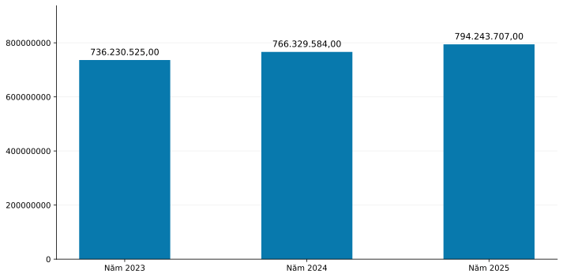
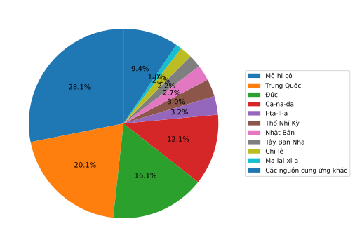
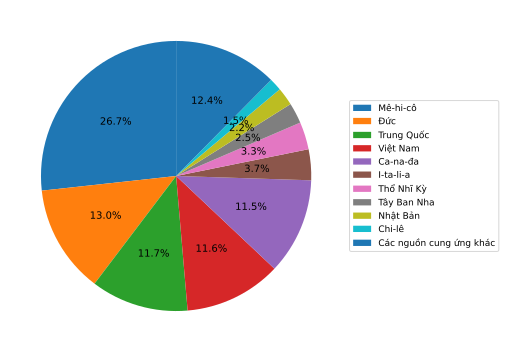
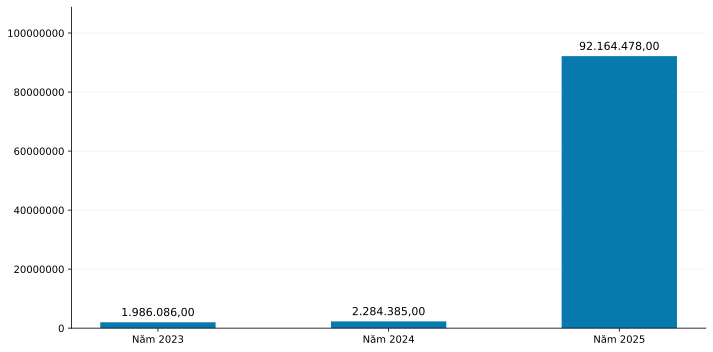
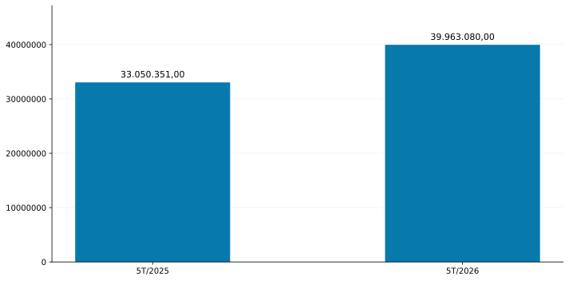

Ma-lai-xi-a khởi xướng điều tra chống bán phá giá đối với sản phẩm thép mạ nhôm kẽm nhập khẩu từ Việt Nam
Cục Phòng vệ thương mại (Bộ Công Thương) nhận được thông tin cho biết, ngày 17/7/2026, Bộ Đầu tư, Thương mại và Công nghiệp Ma-lai-xi-a (MITI) đã ban hành thông báo khởi xướng điều tra chống bán phá giá đối với một số sản phẩm thép mạ nhôm kẽm có xuất xứ hoặc nhập khẩu từ Việt Nam, Trung Quốc và Đài Loan (Trung Quốc).
Sản phẩm bị điều tra là thép mạ nhôm kẽm (flat rolled products of other alloy steel and non-alloy steel, plated or coated with aluminium and zinc), thuộc các mã HS/AHTN: 7210.61.11.00, 7210.61.12.00, 7210.61.91.00, 7210.61.92.00, 7210.61.99.00, 7212.50.23.00, 7212.50.24.00, 7212.50.29.00, 7225.92.90.00, 7225.99.90.00, 7226.99.19.00 và 7226.99.99.00. Mã HS chỉ có tính chất tham khảo, doanh nghiệp cần đối chiếu với mô tả chi tiết sản phẩm trong thông báo khởi xướng để xác định chính xác phạm vi hàng hóa bị điều tra. Vụ việc được khởi xướng trên cơ sở hồ sơ đề nghị của ngành sản xuất trong nước Ma-lai-xi-a, đại diện là NS BlueScope Malaysia.
Theo thông báo của MITI, Cơ quan điều tra sẽ gửi bản câu hỏi điều tra tới các bên liên quan, bao gồm các nhà sản xuất, xuất khẩu của Việt Nam, thông qua Hệ thống Quản lý điều tra phòng vệ thương mại (Trade Remedies Investigation Management System - TRIMA). Các bên liên quan có thời hạn đến ngày 17/8/2026 để nộp bản trả lời câu hỏi và các ý kiến bằng văn bản. Đối với các doanh nghiệp Việt Nam chưa được nêu tên trong hồ sơ vụ việc nhưng có nhu cầu tham gia điều tra, cần chủ động liên hệ với MITI để đăng ký tham gia chậm nhất vào ngày 03/8/2026.
MITI yêu cầu toàn bộ bản trả lời câu hỏi, ý kiến và các tài liệu liên quan phải được nộp bằng phương thức điện tử thông qua hệ thống TRIMA. Trường hợp doanh nghiệp không cung cấp thông tin hoặc cung cấp không đầy đủ, không đúng định dạng hoặc quá thời hạn theo quy định, Cơ quan điều tra có thể sử dụng các dữ liệu sẵn có bất lợi để đưa ra kết luận sơ bộ hoặc cuối cùng theo quy định của pháp luật Ma-lai-xi-a và WTO, dẫn đến khả năng doanh nghiệp phải chịu mức thuế chống bán phá giá cao.
Để bảo vệ quyền và lợi ích hợp pháp của ngành sản xuất và doanh nghiệp Việt Nam, Cục Phòng vệ thương mại khuyến nghị Hiệp hội Thép Việt Nam sớm thông tin về vụ việc tới các doanh nghiệp hội viên có liên quan, phối hợp trao đổi và thống nhất định hướng tham gia vụ việc, đồng thời duy trì phối hợp chặt chẽ với Cục Phòng vệ thương mại trong quá trình theo dõi diễn biến điều tra và cung cấp thông tin khi cần thiết.
Đối với các doanh nghiệp sản xuất, xuất khẩu sản phẩm bị điều tra, cần nghiên cứu kỹ thông báo khởi xướng và bản câu hỏi điều tra; chủ động đăng ký tham gia vụ việc nếu chưa nhận được thông báo từ MITI; chuẩn bị đầy đủ hồ sơ, tài liệu và trả lời bản câu hỏi đúng thời hạn, đúng thể thức theo yêu cầu của Cơ quan điều tra. Trong trường hợp cần thiết, doanh nghiệp nên chủ động đề nghị gia hạn thời gian trả lời theo quy định.
Cục Phòng vệ thương mại cũng khuyến nghị các doanh nghiệp hợp tác đầy đủ trong suốt quá trình điều tra, thường xuyên theo dõi các kết luận, phương pháp tính biên độ phá giá ở từng giai đoạn của vụ việc để kịp thời có ý kiến phản biện khi cần thiết. Đồng thời, doanh nghiệp cần chủ động phối hợp với Cục Phòng vệ thương mại nhằm cập nhật diễn biến vụ việc và đề nghị hỗ trợ trong quá trình tham gia điều tra, qua đó bảo vệ tốt nhất quyền và lợi ích hợp pháp của mình.
TIN TRONG NƯỚC
Bộ Công Thương ban hành Quyết định rà soát nhà xuất khẩu mới trong vụ việc chống bán phá giá đối với một số sản phẩm ván sợi gỗ có xuất xứ từ Vương quốc Thái Lan và Cộng hòa nhân dân Trung Hoa (mã vụ việc: NR01.AD21)
Ngày 17/7/2026, Bộ Công Thương đã ban hành Quyết định số 1784/QĐ-BCT về việc rà soát nhà xuất khẩu mới trong vụ việc áp dụng biện pháp chống bán phá giá đối với một số sản phẩm ván sợi gỗ có xuất xứ từ Vương quốc Thái Lan và Cộng hòa nhân dân Trung Hoa (mã vụ việc: NR01.AD21).
Trước đó, ngày 19/01/2026, Bộ Công Thương đã ban hành Quyết định số 121/QĐ-BCT áp dụng biện pháp chống bán phá giá đối với mặt hàng nêu trên (mã vụ việc: AD21)
Ngày 25/3/2026, Cục Phòng vệ thương mại đã tiếp nhận hồ sơ đề nghị rà soát nhà xuất khẩu mới của Công ty Oasis Forestry Industry Co., Ltd (Trung Quốc). Sau quá trình xem xét, căn cứ quy định tại Điều 57 Nghị định số 86/2025/NĐ-CP, ngày 17/6/2026, Cục Phòng vệ thương mại đã ban hành Thông báo số 91/TB-PVTM, xác nhận hồ sơ yêu cầu rà soát của doanh nghiệp, được bổ sung ngày 02/6/2026, là đầy đủ và hợp lệ.
Trên cơ sở các quy định của Luật Quản lý ngoại thương và Nghị định số 86/2025/NĐ-CP, Bộ Công Thương đã quyết định tiến hành rà soát nhà xuất khẩu mới đối với doanh nghiệp nêu trên theo quy định của pháp luật về phòng vệ thương mại.
Để bảo đảm quyền và lợi ích hợp pháp của các tổ chức, cá nhân có liên quan, Cục Phòng vệ thương mại đề nghị các bên liên quan thực hiện đăng ký tham gia vụ việc theo Mẫu đơn đăng ký bên liên quan tại Phụ lục I ban hành kèm theo Thông tư số 26/2025/TT-BCT và gửi hồ sơ đến Cơ quan điều tra thông qua Hệ thống tiếp nhận hồ sơ phòng vệ thương mại trực tuyến (TRAV ONLINE) trong thời hạn 60 ngày làm việc kể từ ngày Quyết định rà soát có hiệu lực.
Việc đăng ký tham gia vụ việc sẽ giúp các bên liên quan thực hiện đầy đủ quyền và nghĩa vụ theo quy định, đồng thời tạo điều kiện để Cơ quan điều tra xem xét, đánh giá đầy đủ các thông tin, chứng cứ trong quá trình tiến hành rà soát.
TIN NƯỚC NGOÀI
Hoa Kỳ dự kiến áp dụng các mức thuế quan mới khi mức thuế toàn cầu 10% sắp hết hiệu lực
Ngày 21/7/2026, Đại diện Thương mại Hoa Kỳ (USTR) Jamieson Greer cho biết Chính quyền Tổng thống Donald Trump sẽ sớm công bố các biện pháp thuế quan mới đối với hàng hóa nhập khẩu từ nhiều đối tác thương mại. Động thái này được đưa ra trong bối cảnh mức thuế nhập khẩu toàn cầu 10% mà Hoa Kỳ đang áp dụng tạm thời dự kiến sẽ hết hiệu lực vào ngày 24/7/2026.
Theo ông Jamieson Greer, Chính quyền Hoa Kỳ đang chuẩn bị áp dụng các mức thuế mới đối với khoảng 60 đối tác thương mại với lý do các quốc gia này chưa có hoặc chưa thực thi hiệu quả các quy định nhằm ngăn chặn việc sử dụng lao động cưỡng bức trong chuỗi cung ứng.
Ông Jamieson Greer cho biết pháp luật Hoa Kỳ cấm nhập khẩu hàng hóa được sản xuất bằng lao động cưỡng bức, trong khi nhiều quốc gia chưa ban hành hoặc chưa thực thi hiệu quả các quy định tương tự. Tuy nhiên, ông Jamieson Greer không nêu rõ thời điểm cụ thể Chính quyền Hoa Kỳ sẽ công bố các biện pháp thuế quan mới.
Trước đó, Chính quyền Hoa Kỳ đã áp dụng tạm thời mức thuế nhập khẩu 10% đối với hàng hóa nhập khẩu từ hầu hết các đối tác thương mại sau khi một số biện pháp thuế quan của Tổng thống Donald Trump bị Tòa án Tối cao Hoa Kỳ hủy bỏ vào tháng 2/2026. Mức thuế này dự kiến hết hiệu lực vào ngày 24/7/2026.
Dự kiến, các mức thuế mới liên quan đến vấn đề lao động cưỡng bức sẽ dao động từ 10% đến 12,5% và có thể sẽ thay thế mức thuế tạm thời 10% hiện nay. Theo ông Jamieson Greer, các biện pháp này dự kiến sẽ áp dụng đối với phần lớn kim ngạch thương mại của Hoa Kỳ.
Các biện pháp thuế quan mới của Hoa Kỳ có thể làm gia tăng căng thẳng thương mại với nhiều đối tác lớn, trong đó có Liên minh châu Âu (EU), Trung Quốc, Đài Loan (Trung Quốc), Việt Nam và Nhật Bản. Trước đó, EU đã cho rằng việc Hoa Kỳ áp dụng thuế quan với lý do liên quan đến lao động cưỡng bức là "không có cơ sở chính đáng".
Bên cạnh việc chuẩn bị áp dụng các biện pháp thuế quan mới, Chính quyền Tổng thống Donald Trump cũng đang triển khai một số biện pháp thương mại khác, bao gồm:
- Áp dụng mức thuế 25% đối với một số hàng hóa nhập khẩu từ Bra-xin, có hiệu lực từ ngày 22/7/2026;
- Áp dụng mức thuế bổ sung 50% đối với nhiều hàng hóa nhập khẩu từ Ca-na-đa, dự kiến có hiệu lực từ ngày 19/8/2026;
- Tiến hành điều tra đối với 16 đối tác thương mại liên quan đến tình trạng dư thừa công suất công nghiệp.
Ngày 20/7/2026, Chính quyền Hoa Kỳ cũng đã công bố quyết định áp dụng mức thuế bổ sung 50% đối với nhiều hàng hóa nhập khẩu từ Ca-na-đa, có hiệu lực sau 30 ngày. Quyết định được đưa ra trong bối cảnh Hoa Kỳ và Mê-hi-cô đang đẩy mạnh các cuộc đàm phán phục vụ quá trình rà soát Hiệp định Hoa Kỳ - Mê-hi-cô - Ca-na-đa (USMCA).
Theo kế hoạch, Đại diện Thương mại Hoa Kỳ Jamieson Greer sẽ thăm Mê-hi-cô từ ngày 22 đến 24/7/2026 để tham gia các cuộc thảo luận liên quan đến quá trình rà soát Hiệp định USMCA. Trong khi đó, tiến trình đàm phán giữa Hoa Kỳ và Ca-na-đa được cho là diễn ra chậm hơn.
Trong bối cảnh đó, việc Tổng thống Donald Trump viện dẫn Mục 338 của Đạo luật Thuế quan năm 1930 được cho là nhằm gia tăng sức ép đối với Ca-na-đa trong quá trình đàm phán về Hiệp định USMCA.
Hiện nay, Chính quyền Hoa Kỳ chưa công bố thời điểm cụ thể đưa ra các biện pháp tiếp theo sau khi hoàn tất các cuộc điều tra liên quan đến tình trạng dư thừa công suất công nghiệp.
Tổng hợp từ barrons.com
TIN NƯỚC NGOÀI
Hoa Kỳ áp dụng bổ sung thuế quan 50% đối với một số hàng hóa nhập khẩu từ Ca-na-đa
Ngày 20/7/2026, Tổng thống Hoa Kỳ Donald Trump đã ký 03 Tuyên bố theo Mục 338 của Đạo luật Thuế quan năm 1930 nhằm áp dụng mức thuế bổ sung 50% đối với một số hàng hóa nhập khẩu từ Ca-na-đa. Theo Chính quyền Tổng thống Donald Trump, biện pháp này được ban hành nhằm đáp trả các chính sách thương mại mà Hoa Kỳ cho là mang tính phân biệt đối xử của Ca-na-đa đối với hàng hóa xuất khẩu của Hoa Kỳ, đồng thời giảm thiểu những bất lợi đối với hoạt động thương mại của Hoa Kỳ và tạo lập môi trường cạnh tranh bình đẳng cho các mặt hàng xuất khẩu chủ lực của Hoa Kỳ như ô tô, đồ uống có cồn và các sản phẩm sữa.
Mỗi tuyên bố áp dụng thuế bổ sung 50% đối với một nhóm hàng hóa khác nhau của Ca-na-đa, bao gồm nhiều mặt hàng như rượu vang, gậy khúc côn cầu và xi măng.
Chính quyền Tổng thống Donald Trump cho biết các biện pháp thuế quan theo Mục 338 được áp dụng đối với toàn bộ hàng hóa thuộc phạm vi điều chỉnh và không phụ thuộc vào việc hàng hóa có đáp ứng quy tắc xuất xứ theo Hiệp định Hoa Kỳ - Mê-hi-cô - Ca-na-đa (USMCA) hay không. Tuy nhiên, một số mặt hàng được miễn trừ khỏi phạm vi áp dụng của biện pháp, bao gồm năng lượng, kali, các sản phẩm đang chịu thuế theo Mục 232 của Đạo luật Mở rộng Thương mại năm 1962, cùng một số mặt hàng khác như thủy sản và khoáng sản thiết yếu. Theo quy định, các biện pháp thuế quan mới sẽ chính thức có hiệu lực sau 30 ngày kể từ Tổng thống Doanl Trump ký ban hành.
Theo Chính quyền Tổng thống Donald Trump, Mục 338 của Đạo luật thuế quan năm 1930 trao thẩm quyền cho Tổng thống Hoa Kỳ áp dụng các biện pháp thuế quan đối với hàng hóa nhập khẩu từ một quốc gia trong trường hợp quốc gia đó áp dụng các chính sách hoặc biện pháp thương mại mà Hoa Kỳ cho là gây bất lợi đối với hàng hóa xuất khẩu của Hoa Kỳ.
Lập luận của Hoa Kỳ đối với nhóm hàng
Chính quyền Hoa Kỳ cho rằng Ca-na-đa đang áp dụng các mức thuế và hạn ngạch đối với ô tô nhập khẩu từ Hoa Kỳ theo hướng bất lợi hơn so với ô tô nhập khẩu từ các quốc gia khác. Đồng thời, phía Hoa Kỳ cho rằng cơ chế quản lý hạn ngạch của Ca-na-đa đã tạo động lực để các doanh nghiệp sản xuất ô tô của Hoa Kỳ dịch chuyển hoạt động sản xuất sang Ca-na-đa thay vì tiếp tục đầu tư tại Hoa Kỳ.
Theo số liệu do Chính quyền Hoa Kỳ công bố, trong giai đoạn từ tháng 4/2025 đến tháng 3/2026, kim ngạch nhập khẩu ô tô từ Hoa Kỳ vào Ca-na-đa giảm khoảng 22%, tương đương 5,6 tỷ USD, so với cùng kỳ năm trước. Trong khi đó, lượng ô tô nhập khẩu từ các quốc gia khác lại gia tăng để thay thế nguồn cung từ Hoa Kỳ.
Đối với mặt hàng đồ uống có cồn, Chính quyền Hoa Kỳ cho rằng hầu hết các tỉnh và vùng lãnh thổ của Ca-na-đa đã ngừng việc mua, phân phối hoặc bán lẻ các sản phẩm đồ uống có cồn có xuất xứ từ Hoa Kỳ, trong khi không áp dụng các biện pháp tương tự đối với hàng hóa từ các quốc gia khác. Trong giai đoạn từ tháng 3/2025 đến tháng 02/2026, kim ngạch nhập khẩu đồ uống có cồn từ Hoa Kỳ vào Ca-na-đa giảm khoảng 81%, tương đương 582 triệu USD so với cùng kỳ năm trước.
Đối với các sản phẩm sữa, hệ thống quản lý hạn ngạch thuế quan (TRQ) của Ca-na-đa đối với phô mai nhập khẩu từ Hoa Kỳ có mức hạn chế đáng kể so với cơ chế áp dụng đối với phô mai nhập khẩu từ Liên minh châu Âu (EU), mặc dù Ca-na-đa đều đã ký hiệp định thương mại với cả Hoa Kỳ và EU.
Quan điểm của Chính quyền Hoa Kỳ
Theo Chính quyền Hoa Kỳ, việc áp dụng thuế quan theo Mục 338 sẽ góp phần khắc phục những bất lợi mà doanh nghiệp Hoa Kỳ phải đối mặt, đồng thời hỗ trợ thực hiện mục tiêu của chính sách thương mại "Ưu tiên Hoa Kỳ" thông qua việc tăng cường bảo vệ người lao động, nông dân và doanh nghiệp Hoa Kỳ. Chính quyền Tổng thống Donald Trump sẽ tiếp tục sử dụng các công cụ thuế quan và đàm phán thương mại nhằm mở rộng khả năng tiếp cận thị trường cho hàng hóa Hoa Kỳ, thu hút đầu tư vào lĩnh vực sản xuất, đa dạng hóa chuỗi cung ứng và giảm sự phụ thuộc vào các quốc gia được coi là đối thủ chiến lược.
Bên cạnh đó, Chính quyền Hoa Kỳ cho biết sẽ không gia hạn Hiệp định Hoa Kỳ - Mê-hi-cô - Ca-na-đa (USMCA) theo hình thức hiện nay, với lý do hiệp định chưa mang lại đầy đủ lợi ích cho Hoa Kỳ, các biện pháp thuế quan được triển khai trong thời gian qua đã góp phần thúc đẩy tăng trưởng ngành sản xuất trong nước, đồng thời mở rộng khả năng tiếp cận thị trường đối với hàng hóa xuất khẩu của Hoa Kỳ thông qua việc ký kết 18 thỏa thuận thương mại, Ca-na-đa vẫn tiếp tục duy trì các rào cản thương mại thay vì điều chỉnh chính sách theo yêu cầu của Hoa Kỳ là một trong những cơ sở để Chính quyền Hoa Kỳ tiếp tục áp dụng các biện pháp thuế quan.
Trong khoảng hơn một năm nay, Trung Quốc và Ca-na-đa là hai quốc gia duy nhất áp dụng các biện pháp thuế quan đáp trả Hoa Kỳ, thay vì tiến hành đàm phán để giải quyết các bất đồng thương mại.
Tổng hợp từ whitehouse.gov
TIN NƯỚC NGOÀI
Các nhà sản xuất thép Ấn Độ chuyển hướng sang thị trường trong nước khi châu Âu siết nhập khẩu và thép Trung Quốc giá rẻ gia tăng cạnh tranh
Ngày 21/7/2026, các doanh nghiệp sản xuất thép của Ấn Độ đang chuyển hướng tập trung vào thị trường trong nước trước sự sụt giảm xuất khẩu, sau khi Liên minh châu Âu (EU) và Vương quốc Anh tăng cường các biện pháp quản lý nhập khẩu thép. Tuy nhiên, nỗ lực này đang gặp nhiều thách thức do phải cạnh tranh với thép giá rẻ nhập khẩu từ Trung Quốc.
Ấn Độ hiện là quốc gia sản xuất thép thô lớn thứ hai thế giới sau Trung Quốc và khoảng hai phần ba lượng thép xuất khẩu của nước này được tiêu thụ tại thị trường châu Âu. Theo các doanh nghiệp trong ngành, xuất khẩu thép sang EU và Vương quốc Anh có thể giảm tới 40% trong năm 2026 sau khi hai thị trường này đồng loạt siết chặt các quy định về nhập khẩu.
Trước đó, ngày 30/6/2026, EU công bố cơ chế hạn ngạch nhằm hạn chế lượng thép được nhập khẩu miễn thuế. Trước thời điểm đó, từ tháng 01/2026 EU bắt đầu áp dụng Cơ chế điều chỉnh biên giới các-bon (CBAM) đối với thép và một số mặt hàng có mức độ phát thải cao. Trong khi đó, từ ngày 01/7/2026, Vương quốc Anh cũng điều chỉnh theo hướng siết chặt hạn ngạch nhập khẩu thép được hưởng ưu đãi thuế quan. Theo phía Ấn Độ cho biết khoảng 85% kim ngạch xuất khẩu thép sang thị trường Vương quốc Anh vẫn được hưởng ưu đãi theo hiệp định thương mại tự do giữa hai nước.
Việc EU và Vương Quốc Anh đồng loạt siết chặt các biện pháp quản lý nhập khẩu được dự báo sẽ ảnh hưởng đáng kể đến hoạt động xuất khẩu thép của Ấn Độ. Tháng 3/2026, Ấn Độ đã xuất khẩu 6,6 triệu tấn thép thành phẩm. Tuy nhiên, lượng xuất khẩu trong tháng 5/2026 chỉ đạt khoảng 0,5 triệu tấn, thấp hơn đáng kể so với mức bình quân của sáu tháng trước đó.
Bên cạnh những khó khăn tại thị trường xuất khẩu, việc chuyển hướng tiêu thụ sang thị trường trong nước cũng gặp nhiều thách thức khi thép nhập khẩu từ Trung Quốc có giá thấp hơn thép sản xuất trong nước khoảng 52–63 USD/tấn. Theo các doanh nghiệp và chuyên gia phân tích, mức giá này khiến các nhà sản xuất thép Ấn Độ gặp khó khăn trong việc tiêu thụ lượng hàng hóa chuyển hướng từ các thị trường xuất khẩu, đồng thời tạo ra môi trường cạnh tranh không bình đẳng với ngành sản xuất trong nước. Trước tình hình đó, Chính phủ Ấn Độ đã khởi xướng điều tra chống bán phá giá đối với sản phẩm thép cán nóng nhập khẩu từ Trung Quốc, Nhật Bản và Nga.
Một quan chức cấp cao của Chính phủ Ấn Độ cho biết nước này hiện là một trong số ít thị trường lớn vẫn duy trì được mức tăng trưởng nhu cầu tiêu thụ thép, các doanh nghiệp có thể đề nghị áp dụng các biện pháp chống bán phá giá nhằm hạn chế thép nhập khẩu giá rẻ, đặc biệt là từ Trung Quốc.
Mặc dù hoạt động xuất khẩu đang chịu nhiều sức ép, các doanh nghiệp thép lớn của Ấn Độ vẫn tiếp tục triển khai kế hoạch mở rộng công suất sản xuất nhờ triển vọng tích cức của thị trường trong nước. Trong bối cảnh tăng trưởng kinh tế duy trì ở mức cao và Chính phủ tiếp tục đẩy mạnh đầu tư phát triển cơ sở hạ tầng, các doanh nghiệp thép lớn của Ấn Độ đặt mực tiêu nâng cao công suất sản xuất thép thô lên 400 triệu tấn vào giai đoạn 2035–2036, so với mức sản lượng hiện nay khoảng 168 triệu tấn.
Theo bà Hui Ting Sim, Phó Chủ tịch kiêm Chuyên gia phân tích cao cấp của Moody's Ratings, các tập đoàn Tata Steel và JSW Steel đang tập trung phần lớn các khoản đầu tư tại thị trường Ấn Độ do đánh giá đây là thị trường có nhiều tiềm năng tăng trưởng. Tuy nhiên, bà cho rằng biên lợi nhuận của các doanh nghiệp thép Ấn Độ khó có thể cải thiện nếu không có sự điều chỉnh tăng đáng kể đối với mức thuế nhập khẩu.
Ông Ravi Sodah, Phó Chủ tịch điều hành của Elara Capital, cũng nhận định phần lớn các dự án mở rộng công suất sản xuất thép mới tại Ấn Độ được triển khai trên cơ sở kỳ vọng nhu cầu tiêu thị trong nước tiếp tục tăng trưởng, thay vì phục vụ hoạt động xuất khẩu. Theo số liệu của công ty tư vấn hàng hóa BigMint, nhu cầu tiêu thụ thép thành phẩm của Ấn Độ đã tăng 55% trong vòng 5 năm qua, cao hơn mức tăng 42% của sản lượng, qua đó cho thấy dư địa tăng trưởng của thị trường trong nước vẫn còn lớn.
Bên cạnh việc tập trung khai thác thị trường trong nước, các doanh nghiệp thép Ấn Độ cũng được dự báo sẽ đẩy mạnh xuất khẩu sang Đông Á và Trung Đông nhằm bù đắp một phần sự sụt giảm tại thị trường châu Âu. Tuy nhiên, theo ông Shankhadeep Mukherjee, Chuyên gia phân tích của CRU Group (Anh), các doanh nghiệp Ấn Độ sẽ phải đối mặt với sự cạnh tranh ngày càng gay gắt tại thị trường Trung Đông từ các nhà sản xuất thép Trung Quốc cũng như các doanh nghiệp sản xuất thép của Ấn Độ.
Tổng hợp từ reuters.com
TIN NƯỚC NGOÀI
Vương quốc Anh khởi xướng rà soát giữa kỳ biện pháp chống bán phá giá đối với bộ đồ ăn và dụng cụ nhà bếp bằng gốm sứ nhập khẩu từ Trung Quốc
Ngày 20/7/2026, Cơ quan Quản lý các biện pháp phòng vệ thương mại của Vương quốc Anh (TRA) thông báo khởi xướng rà soát giữa kỳ đối với biện pháp chống bán phá giá đang áp dụng đối với sản phẩm bộ đồ ăn và dụng cụ nhà bếp bằng gốm sứ nhập khẩu từ Trung Quốc. Theo TRA, cuộc rà soát được khởi xướng trên cơ sở có dấu hiệu cho thấy hành vi bán phá giá vẫn tiếp diễn, trong khi lượng hàng hóa nhập khẩu từ Trung Quốc tiếp tục gia tăng và giá nhập khẩu có xu hướng giảm.
Mặc dù Vương quốc Anh hiện đang áp dụng thuế chống bán phá giá đối với mặt hàng này với mức thuế từ 13% đến 36%, lượng hàng nhập khẩu từ Trung Quốc không những không giảm mà còn tăng khoảng 22% trong giai đoạn 2023–2025. Theo TRA, thông thường sau khi biện pháp chống bán phá giá được áp dụng, lượng hàng nhập khẩu chịu tác động của biện pháp sẽ có xu hướng giảm theo thời gian.
Bên cạnh đó, đơn giá nhập khẩu sản phẩm gốm sứ từ Trung Quốc cũng giảm đáng kể kể từ năm 2022. Cụ thể, giá trị nhập khẩu bình quân trên một đơn vị sản phẩm đã giảm tới 35% trong giai đoạn 2022–2025. Theo TRA, việc lượng hàng nhập khẩu tiếp tục gia tăng trong khi giá nhập khẩu giảm mạnh cho thấy dấu hiệu hành vi bán phá giá vẫn tiếp diễn và làm suy giảm năng lực cạnh tranh của ngành sản xuất gốm sứ trong nước.
Thông qua cuộc rà soát giữa kỳ, TRA sẽ xem xét liệu biện pháp chống bán phá giá hiện hành có còn đủ để loại bỏ thiệt hại do hành vi bán phá giá gây thiệt hại cho ngành sản xuất trong nước hay không, đồng thời xem xét sự cần thiết của việc điều chỉnh mức thuế chống bán phá giá.
Tổng Giám đốc điều hành của TRA, bà Jessica Blakely và bà Carmen Suarez, cho biết, cuộc rà soát giữa kỳ được khởi xướng trên cơ sở các bằng chứng cho thấy hành vi bán phá giá đối với sản phẩm nhập khẩu từ Trung Quốc vẫn tiếp diễn. Việc TRA kịp thời phản ứng trước những thay đổi của thị trường là một trong những minh chứng cho việc thực hiện định hướng chiến lược của Chính phủ Vương Quốc Anh nhằm xây dựng một hệ thống phòng vệ thương mại dễ tiếp cận hơn, chủ động hơn và linh hoạt hơn.
Theo thông báo của TRA, các doanh nghiệp có liên quan hoặc có thể bị ảnh hưởng bởi cuộc rà soát cần đăng ký tham gia vụ việc trước ngày 04/8/2026 thông qua hồ sơ công khai của vụ việc. Bên cạnh đó, TRA sẽ tổ chức phiên điều trần trực tuyến vào ngày 24/7/2026 nhằm cung cấp thông tin về quá trình rà soát và giải đáp các nội dung liên quan cho các bên quan tâm.
Tổng hợp từ gov.uk
TIN NƯỚC NGOÀI
Hoa Kỳ khởi xướng điều tra tự vệ đối với sản phẩm thịt cừu
Ngày 17/7/2026, Hoa Kỳ đã thông báo tới Ủy ban Tự vệ của Tổ chức Thương mại thế giới (WTO) về việc khởi xướng điều tra tự vệ đối với sản phẩm thịt cừu nhập khẩu. Cuộc điều tra được Ủy ban Thương mại quốc tế Hoa Kỳ (USITC) chính thức khởi xướng từ ngày 13/7/2026.
Theo thông báo gửi WTO, cơ quan đầu mối của vụ việc là Văn phòng Điều tra thuộc Ủy ban Thương mại quốc tế Hoa Kỳ (USITC). Hồ sơ công khai của vụ việc được đăng tải trên Hệ thống Hồ sơ điện tử (EDIS) của USITC để các bên liên quan theo dõi và tiếp cận thông tin.
Hoa Kỳ quy định các tổ chức, cá nhân có nhu cầu tham gia vụ việc với tư cách là bên liên quan phải nộp đơn đăng ký tham gia trong thời hạn 21 ngày kể từ ngày thông báo khởi xướng được đăng trên Công báo Liên bang (Federal Register). Sau khi hết thời hạn đăng ký, Thư ký của USITC sẽ lập danh sách các bên tham gia điều tra.
Các bên liên quan có quyền nộp bản đệ trình trước phiên điều trần. Thời hạn nộp đối với giai đoạn xem xét thiệt hại nghiêm trọng là ngày 08/10/2026, trong khi thời hạn đối với giai đoạn xem xét biện pháp tự vệ là ngày 23/11/2026.
USITC dự kiến tổ chức hai phiên điều trần riêng biệt. Phiên điều trần về thiệt hại nghiêm trọng sẽ được tổ chức vào ngày 16/10/2026 tại trụ sở USITC ở Washington, D.C. Trường hợp USITC kết luận ngành sản xuất trong nước bị thiệt hại nghiêm trọng hoặc các thành viên Ủy ban có số phiếu ngang nhau về vấn đề này, cơ quan điều tra sẽ tiếp tục tổ chức phiên điều trần về biện pháp tự vệ vào ngày 01/12/2026.
Các bên có nhu cầu tham gia phát biểu tại các phiên điều trần phải gửi văn bản đăng ký trước ngày 08/10/2026 đối với phiên điều trần về thiệt hại và trước ngày 23/11/2026 đối với phiên điều trần về biện pháp tự vệ. Ngoài ra, các bên tham gia và các tổ chức, cá nhân khác có nhu cầu trình bày ý kiến bằng miệng tại phiên điều trần sẽ tham dự các cuộc họp chuẩn bị trước phiên điều trần, dự kiến diễn ra vào ngày 15/10/2026 và 30/11/2026.
Theo quy định của WTO, điều tra tự vệ được tiến hành nhằm xác định liệu lượng hàng hóa nhập khẩu gia tăng có gây ra hoặc đe dọa gây ra thiệt hại nghiêm trọng cho ngành sản xuất trong nước hay không. Trong quá trình điều tra, các nhà nhập khẩu, nhà xuất khẩu và các bên liên quan có quyền cung cấp thông tin, chứng cứ, trình bày quan điểm cũng như phản hồi đối với các ý kiến của các bên khác.
Theo Hiệp định về các biện pháp tự vệ của WTO, một thành viên WTO chỉ được áp dụng biện pháp tự vệ (như tạm thời hạn chế nhập khẩu) khi kết luận điều tra xác định hàng hóa nhập khẩu gia tăng là nguyên nhân gây ra hoặc đe dọa gây ra thiệt hại nghiêm trọng đối với ngành sản xuất trong nước.
Tổng hợp từ WTO
TIN NƯỚC NGOÀI
Mê-hi-cô áp dụng thuế chống bán phá giá trong 5 năm đối với sản phẩm bìa hộp nhập khẩu từ Trung Quốc
Ngày 08/7/2026, Bộ Kinh tế Mê-hi-cô đã công bố kết luận cuối cùng trong vụ việc điều tra chống bán phá giá đối với sản phẩm bìa hộp nhập khẩu có xuất xứ từ Trung Quốc, quyết định áp dụng thuế chống bán phá giá chính thức trong thời hạn 05 năm.
Theo kết luận điều tra, cơ quan điều tra xác định sản phẩm bìa hộp nhập khẩu từ Trung Quốc đã được bán vào thị trường Mê-hi-cô với giá bán phá giá, gây ảnh hưởng đến ngành sản xuất trong nước. Trên cơ sở đó, Bộ Kinh tế Mê-hi-cô quyết định áp dụng biện pháp chống bán phá giá chính thức đối với các sản phẩm thuộc phạm vi điều tra. Quyết định có hiệu lực kể từ ngày kế tiếp sau ngày được công bố trên Công báo Liên bang (DOF).
Mức thuế chống bán phá giá được áp dụng khác nhau đối với từng nhà sản xuất, xuất khẩu của Trung Quốc, cụ thể như sau:
Nhà sản xuất/xuất khẩu
Mức thuế (USD/kg)
Guangxi Jingui
0,4388
Jiangsu Bohui
0,2837
Ningbo Asia
0,4854
Shandong Bohui
0,3909
Các nhà sản xuất, xuất khẩu khác của Trung Quốc
0,4854
Theo quyết định của Bộ Kinh tế Mê-hi-cô, thuế chống bán phá giá sẽ được áp dụng đối với các lô hàng bìa hộp nhập khẩu thuộc các mã HS nằm trong phạm vi điều tra. Nhà nhập khẩu chỉ được miễn áp dụng thuế nếu chứng minh được hàng hóa không có xuất xứ từ Trung Quốc, bất kể hàng hóa được vận chuyển trực tiếp hay thông qua nước thứ ba.
Việc áp dụng biện pháp chống bán phá giá được kỳ vọng sẽ tăng cường bảo vệ ngành sản xuất bìa hộp trong nước của Mê-hi-cô trước tình trạng hàng nhập khẩu bị bán phá giá, đồng thời tạo điều kiện cho các nhà cung cấp từ những quốc gia khác mở rộng cơ hội tham gia thị trường Mê-hi-cô.
Tổng hợp từ Fastmarkets
TIN NƯỚC NGOÀI
Tập đoàn Bayer AG rút đơn yêu cầu điều tra chống bán phá giá đối với glyphosate nhập khẩu từ Trung Quốc
Tập đoàn Bayer AG đã chính thức rút đơn yêu cầu điều tra chống bán phá giá đối với sản phẩm glyphosate nhập khẩu từ Trung Quốc, sau khi vấp phải sự phản đối của nhiều hiệp hội nông nghiệp tại Hoa Kỳ do lo ngại việc áp dụng thuế chống bán phá giá sẽ làm gia tăng chi phí đầu vào cho người nông dân.
Ngày 17/7/2026, Bayer đã thông báo tới Ủy ban Thương mại quốc tế Hoa Kỳ (USITC) về việc không tiếp tục đề nghị cơ quan này điều tra cáo buộc Trung Quốc bán phá giá các sản phẩm glyphosate vào thị trường Hoa Kỳ.
Trước đó, nhiều tổ chức đại diện cho nông dân Hoa Kỳ đã phản đối đơn yêu cầu của Bayer, cho rằng việc áp dụng thuế chống bán phá giá sẽ khiến giá glyphosate tăng lên, làm gia tăng chi phí sản xuất đối với các hộ nông dân sử dụng loại thuốc diệt cỏ này. Theo Hiệp hội Ngô quốc gia Hoa Kỳ (National Corn Growers Association - NCGA), Bayer đã chịu sức ép đáng kể từ các hiệp hội ngành hàng trong quá trình xem xét vụ việc.
Chủ tịch NCGA cho biết, cộng đồng nông dân đánh giá cao vai trò của các doanh nghiệp cung cấp vật tư nông nghiệp, song cũng khẳng định người sản xuất không thể gánh chịu chi phí phát sinh từ các biện pháp làm tăng giá đầu vào.
Đơn yêu cầu điều tra được Bayer nộp dưới tên Monsanto, công ty được Bayer mua lại vào năm 2018 và Ruveon, đơn vị mới được thành lập để quản lý hoạt động kinh doanh glyphosate của Bayer tại Hoa Kỳ.
Trong thông cáo phát đi sau khi rút đơn, Ruveon cho biết kể từ khi nộp hồ sơ, doanh nghiệp đã trực tiếp trao đổi với nông dân và các hiệp hội nông nghiệp để lắng nghe ý kiến của họ. Quyết định rút đơn phản ánh cam kết ưu tiên lợi ích của người nông dân và đáp ứng tốt hơn nhu cầu của khách hàng trong bối cảnh ngành nông nghiệp đang gặp nhiều khó khăn.
Theo Bayer, toàn bộ nguồn cung glyphosate tại thị trường Hoa Kỳ hiện nay đều đến từ Bayer hoặc các doanh nghiệp Trung Quốc. Trong đơn yêu cầu nộp ngày 30/6/2026, Bayer cho rằng doanh nghiệp đang mất thị phần vào tay các đối thủ Trung Quốc và cáo buộc Chính phủ Trung Quốc đã trợ cấp, đồng thời hỗ trợ các doanh nghiệp mở rộng thị phần tại Hoa Kỳ.
Sau khi Bayer rút đơn, Hiệp hội Đậu tương Hoa Kỳ (American Soybean Association - ASA) cho biết quyết định này được đưa ra sau khi doanh nghiệp tiếp nhận nhiều ý kiến phản hồi từ cộng đồng người sản xuất. Hiệp hội bày tỏ đánh giá cao việc Bayer và Ruveon đã lắng nghe các ý kiến của nông dân, đồng thời kỳ vọng hai bên sẽ tiếp tục duy trì đối thoại trong thời gian tới.
Trong khi đó, Hiệp hội Những người trồng lúa mì quốc gia Hoa Kỳ (National Association of Wheat Growers - NAWG) cũng kêu gọi Bayer ghi nhớ phản ứng mạnh mẽ của cộng đồng nông dân đối với vụ việc, đồng thời nhấn mạnh rằng các doanh nghiệp cung cấp vật tư nông nghiệp cần bảo đảm tính công bằng và minh bạch trên thị trường khi theo đuổi các lợi ích thương mại.
Tổng hợp từ Capital Press
THÔNG TIN XUẤT NHẬP KHẨU
Cảnh báo đối với xuất khẩu mặt hàng kính nổi vào thị trường Hoa Kỳ
Mô tả mặt hàng kính nổi
Kính nổi (Float Glass) là loại kính phẳng được sản xuất bằng công nghệ nổi trên bể thiếc nóng chảy, hiện là dòng kính xây dựng và kính công nghiệp phổ biến nhất trên thế giới. Quá trình sản xuất theo công nghệ này giúp tạo ra các tấm kính có bề mặt phẳng tuyệt đối, độ dày đồng đều, độ trong suốt cao và chất lượng quang học ổn định, đáp ứng các tiêu chuẩn kỹ thuật khắt khe của ngành xây dựng, kiến trúc, giao thông vận tải, điện tử và năng lượng. Thành phần chính của kính nổi bao gồm cát thạch anh (SiO₂) có độ tinh khiết cao, tro soda (Na₂CO₃), đá vôi (CaCO₃), đôlômit (CaMg(CO₃)₂), fenspat, natri sunfat và một tỷ lệ nhất định thủy tinh tái chế (cullet) nhằm giảm tiêu hao nguyên liệu và tiết kiệm năng lượng. Sau khi các nguyên liệu được nấu chảy ở nhiệt độ khoảng 1.500 -1.600°C, thủy tinh lỏng được đưa lên bề mặt bể thiếc nóng chảy để tạo thành một dải kính phẳng, sau đó được làm nguội từ từ trong lò ủ nhằm loại bỏ ứng suất nội tại trước khi cắt thành các kích thước tiêu chuẩn hoặc tiếp tục gia công thành các sản phẩm kính có giá trị gia tăng cao.
Kính nổi có nhiều chủng loại khác nhau tùy theo mục đích sử dụng, bao gồm kính nổi không màu, kính màu hấp thụ nhiệt, kính phản quang, kính phủ mềm và phủ cứng, kính siêu trắng, kính phủ năng lượng mặt trời và các loại kính chuyên dụng khác. Từ kính nổi cơ bản, doanh nghiệp có thể tiếp tục gia công để tạo thành kính cường lực, kính bán cường lực, kính dán an toàn nhiều lớp, kính hộp cách âm - cách nhiệt, kính chống cháy, kính chống đạn hoặc các sản phẩm kính kỹ thuật phục vụ những yêu cầu chuyên biệt của thị trường. Nhờ đặc tính bề mặt nhẵn, độ truyền sáng cao, khả năng gia công linh hoạt và tương thích với nhiều công nghệ phủ hiện đại, kính nổi được coi là nguyên liệu đầu vào quan trọng của toàn bộ ngành công nghiệp chế biến kính.
Về đặc tính kỹ thuật, kính nổi có độ truyền sáng cao, độ méo hình thấp, khả năng chịu tác động của thời tiết tốt, bề mặt đồng đều và ít khuyết tật hơn so với các công nghệ sản xuất kính truyền thống. Sản phẩm được sản xuất với nhiều mức độ dày khác nhau, phổ biến từ 2 mm đến 19 mm hoặc dày hơn đối với các ứng dụng đặc biệt; đồng thời có thể được cắt theo nhiều kích thước khác nhau để đáp ứng nhu cầu của khách hàng. Sau khi được gia công, kính nổi có thể cải thiện đáng kể khả năng chịu lực, chịu va đập, cách âm, cách nhiệt, chống tia cực tím, tiết kiệm năng lượng và bảo đảm an toàn cho người sử dụng. Đây cũng là loại vật liệu có khả năng tái chế gần như hoàn toàn, góp phần giảm tiêu hao tài nguyên thiên nhiên và phù hợp với xu hướng phát triển kinh tế tuần hoàn cũng như giảm phát thải khí nhà kính.
Hiện nay, kính nổi được sử dụng rộng rãi trong nhiều lĩnh vực của nền kinh tế. Trong ngành xây dựng, sản phẩm được dùng để sản xuất cửa sổ, cửa đi, vách kính, mặt dựng, mái kính, lan can, sàn kính, cầu kính, nội thất và các công trình thương mại, dân dụng, công nghiệp. Trong lĩnh vực ô tô và giao thông vận tải, kính nổi là nguyên liệu để sản xuất kính chắn gió, kính cửa xe và các loại kính an toàn cho phương tiện vận tải. Ngoài ra, sản phẩm còn được sử dụng trong sản xuất gương, thiết bị điện tử, đồ gia dụng, pin năng lượng mặt trời, nhà kính nông nghiệp công nghệ cao và nhiều ứng dụng công nghiệp khác. Với sự phát triển mạnh mẽ của xu hướng xây dựng xanh, đô thị thông minh và công trình tiết kiệm năng lượng, nhu cầu đối với các dòng kính nổi chất lượng cao, đặc biệt là kính Low-E, kính phủ kiểm soát năng lượng mặt trời và kính siêu trắng, đang gia tăng nhanh trên phạm vi toàn cầu.
Trên thị trường quốc tế, kính nổi được phân loại theo nhiều tiêu chuẩn kỹ thuật như độ dày, màu sắc, kích thước, khả năng truyền sáng, hệ số hấp thụ nhiệt, khả năng phản xạ và các tiêu chuẩn về chất lượng quang học. Sản phẩm phải đáp ứng các tiêu chuẩn quốc tế như ASTM (Hoa Kỳ), EN (Liên minh châu Âu), ISO hoặc JIS (Nhật Bản), tùy thuộc vào yêu cầu của từng thị trường nhập khẩu. Do giá trị lớn, khối lượng nặng và dễ vỡ trong quá trình vận chuyển, hoạt động sản xuất và xuất khẩu kính nổi đòi hỏi doanh nghiệp phải đầu tư dây chuyền công nghệ hiện đại, hệ thống kiểm soát chất lượng nghiêm ngặt, quy trình đóng gói chuyên dụng và mạng lưới logistics phù hợp nhằm bảo đảm chất lượng sản phẩm đến tay khách hàng.
Trong những năm gần đây, cùng với sự phát triển của ngành xây dựng và xu hướng sử dụng vật liệu thân thiện với môi trường, kính nổi tiếp tục giữ vai trò là sản phẩm nền tảng của ngành công nghiệp kính toàn cầu. Nhu cầu đối với các sản phẩm kính có hiệu suất năng lượng cao, phát thải carbon thấp và tích hợp các công nghệ thông minh đang thúc đẩy các doanh nghiệp đầu tư đổi mới công nghệ sản xuất, tối ưu hóa tiêu hao năng lượng, tăng tỷ lệ sử dụng nguyên liệu tái chế và phát triển các dòng kính chất lượng cao có giá trị gia tăng lớn. Điều này không chỉ nâng cao năng lực cạnh tranh của ngành kính mà còn tạo điều kiện mở rộng thị trường xuất khẩu, đáp ứng các yêu cầu ngày càng cao về chất lượng, môi trường và phát triển bền vững tại các thị trường nhập khẩu lớn trên thế giới.
Quy trình sản xuất kính nổi
Kính nổi được sản xuất bằng công nghệ nổi trên bể thiếc nóng chảy, đây là công nghệ tiên tiến và được sử dụng phổ biến nhất hiện nay trong ngành công nghiệp sản xuất kính phẳng trên thế giới. So với các phương pháp sản xuất kính truyền thống, công nghệ kính nổi cho phép tạo ra các tấm kính có bề mặt nhẵn bóng tự nhiên, độ phẳng gần như tuyệt đối, độ dày đồng đều, chất lượng quang học cao và đáp ứng yêu cầu của nhiều lĩnh vực như xây dựng, sản xuất ô tô, thiết bị điện tử, năng lượng mặt trời và nội thất. Toàn bộ quá trình sản xuất được vận hành liên tục trên dây chuyền tự động với hệ thống kiểm soát nhiệt độ, áp suất và chất lượng nghiêm ngặt nhằm bảo đảm sản phẩm đạt các tiêu chuẩn kỹ thuật quốc tế.
Quy trình sản xuất bắt đầu từ công đoạn chuẩn bị nguyên liệu. Các nguyên liệu chính bao gồm cát thạch anh có độ tinh khiết cao, tro soda (Na₂CO₃), đá vôi (CaCO₃), đôlômit, fenspat, natri sunfat và thủy tinh tái chế (cullet). Trong đó, cát thạch anh là thành phần quan trọng nhất, chiếm khoảng 70–75% khối lượng phối liệu và quyết định độ trong suốt của sản phẩm. Tất cả nguyên liệu được kiểm tra chất lượng, nghiền, sấy khô và cân định lượng theo tỷ lệ chính xác trước khi đưa vào hệ thống phối trộn tự động. Việc sử dụng thủy tinh tái chế không chỉ giúp giảm chi phí nguyên liệu mà còn rút ngắn thời gian nóng chảy, tiết kiệm năng lượng và giảm lượng khí phát thải trong quá trình sản xuất.
Sau khi phối trộn, hỗn hợp nguyên liệu được đưa vào lò nấu liên tục hoạt động ở nhiệt độ khoảng 1.550–1.600°C. Dưới tác động của nhiệt độ cao, các nguyên liệu nóng chảy hoàn toàn và phản ứng với nhau để tạo thành thủy tinh lỏng đồng nhất. Trong quá trình này, thủy tinh được tinh luyện nhằm loại bỏ bọt khí, tạp chất và các thành phần chưa nóng chảy hoàn toàn, giúp sản phẩm đạt độ trong suốt và chất lượng quang học cao. Lò nấu thường được thiết kế vận hành liên tục trong nhiều năm, với công suất từ vài trăm đến trên một nghìn tấn thủy tinh mỗi ngày, bảo đảm tính ổn định của dây chuyền sản xuất.
Sau khi ra khỏi lò nấu, thủy tinh lỏng được dẫn vào bể thiếc nóng chảy – công đoạn quyết định chất lượng của sản phẩm kính nổi. Trong bể này, thủy tinh lỏng nổi trên bề mặt thiếc do có khối lượng riêng nhỏ hơn, đồng thời dưới tác động của trọng lực và sức căng bề mặt, dải thủy tinh tự động dàn phẳng và tạo thành hai bề mặt nhẵn bóng hoàn hảo mà không cần đánh bóng cơ học. Bể thiếc được duy trì trong môi trường khí bảo vệ gồm nitơ và hydro nhằm ngăn ngừa hiện tượng oxy hóa thiếc, bảo đảm chất lượng bề mặt kính. Độ dày của kính được điều chỉnh thông qua tốc độ kéo dải kính và hệ thống con lăn điều khiển, cho phép sản xuất các loại kính có độ dày từ khoảng 2 mm đến 19 mm hoặc lớn hơn tùy theo yêu cầu của thị trường.
Dải kính sau khi rời khỏi bể thiếc được chuyển vào lò ủ để làm nguội theo chế độ nhiệt được kiểm soát chính xác. Đây là công đoạn rất quan trọng nhằm loại bỏ ứng suất bên trong tấm kính phát sinh trong quá trình tạo hình. Việc giảm nhiệt từ từ giúp kính ổn định cấu trúc, tăng độ bền cơ học và hạn chế nguy cơ nứt vỡ trong quá trình cắt, gia công, vận chuyển và sử dụng. Nếu quá trình ủ không được thực hiện đúng quy trình, sản phẩm có thể xuất hiện ứng suất dư, ảnh hưởng đến chất lượng và tuổi thọ của kính.
Sau khi hoàn thành quá trình ủ, kính được đưa qua hệ thống kiểm tra chất lượng tự động bằng camera quang học, cảm biến laser và các thiết bị đo chuyên dụng để phát hiện các khuyết tật như bọt khí, tạp chất, vết xước, biến dạng quang học hoặc sai lệch về độ dày. Những tấm kính đạt tiêu chuẩn sẽ được cắt tự động theo kích thước thương mại hoặc theo yêu cầu của khách hàng bằng hệ thống cắt CNC có độ chính xác cao. Các phần kính thừa sau khi cắt được thu hồi và tái chế làm nguyên liệu cho các mẻ sản xuất tiếp theo, góp phần nâng cao hiệu quả sử dụng nguyên liệu và giảm thiểu chất thải.
Ở công đoạn cuối cùng, kính thành phẩm được phân loại theo kích thước, độ dày, chất lượng bề mặt và các tiêu chuẩn kỹ thuật trước khi được đóng gói bằng giá thép hoặc kiện gỗ chuyên dụng có lớp đệm chống va đập để bảo đảm an toàn trong quá trình vận chuyển. Tùy theo nhu cầu của khách hàng, kính nổi có thể được tiêu thụ trực tiếp hoặc tiếp tục gia công thành các sản phẩm có giá trị gia tăng cao như kính cường lực, kính dán an toàn, kính hộp cách âm – cách nhiệt, kính phản quang, kính phủ Low-E, kính siêu trắng hoặc kính sử dụng trong pin năng lượng mặt trời và các công trình xanh.
Hiện nay, cùng với xu hướng phát triển bền vững của ngành vật liệu xây dựng, các nhà sản xuất kính nổi trên thế giới đang đẩy mạnh ứng dụng công nghệ tự động hóa, trí tuệ nhân tạo và chuyển đổi số trong quản lý dây chuyền sản xuất nhằm nâng cao năng suất, tối ưu hóa chất lượng sản phẩm và giảm tiêu hao năng lượng. Đồng thời, việc tăng tỷ lệ sử dụng thủy tinh tái chế, cải tiến công nghệ lò nấu, sử dụng nhiên liệu sạch và triển khai các giải pháp giảm phát thải carbon đang trở thành xu hướng quan trọng của ngành kính toàn cầu. Những đổi mới này không chỉ góp phần nâng cao khả năng cạnh tranh của sản phẩm kính nổi mà còn đáp ứng các yêu cầu ngày càng nghiêm ngặt của các thị trường nhập khẩu lớn về chất lượng, hiệu quả năng lượng và bảo vệ môi trường.
Thị trường kính nổi của Hoa Kỳ và xu hướng
Hoa Kỳ là một trong những thị trường tiêu thụ kính nổi lớn nhất thế giới nhờ quy mô nền kinh tế lớn, ngành xây dựng phát triển, nhu cầu sửa chữa và cải tạo nhà ở cao, cùng với sự phát triển của các ngành công nghiệp ô tô, năng lượng tái tạo và sản xuất thiết bị công nghệ cao. Kính nổi là nguyên liệu cơ bản để sản xuất nhiều dòng kính chế biến như kính cường lực, kính dán an toàn, kính hộp cách nhiệt, kính phủ Low-E, kính phản quang và kính năng lượng mặt trời, do đó đóng vai trò quan trọng trong chuỗi cung ứng của ngành vật liệu xây dựng Hoa Kỳ. Theo các nghiên cứu thị trường, quy mô thị trường kính nổi của Hoa Kỳ đạt khoảng 5,36 tỷ USD trong năm 2024 và được dự báo tăng lên khoảng 7,11 tỷ USD vào năm 2031, với tốc độ tăng trưởng bình quân khoảng 4,3%/năm trong giai đoạn 2025–2031. Động lực tăng trưởng chủ yếu đến từ nhu cầu xây dựng nhà ở và công trình thương mại, đầu tư cơ sở hạ tầng, xu hướng cải tạo các công trình cũ nhằm nâng cao hiệu quả sử dụng năng lượng, cũng như sự phát triển của ngành sản xuất kính chuyên dụng phục vụ ô tô và năng lượng mặt trời.
Thị trường kính nổi của Hoa Kỳ có cơ cấu tiêu thụ đa dạng, trong đó lĩnh vực xây dựng và kiến trúc chiếm tỷ trọng lớn nhất. Kính nổi được sử dụng rộng rãi để sản xuất cửa sổ, cửa đi, vách kính, mặt dựng (curtain wall), mái kính, lan can kính và các sản phẩm kính nội thất cho các công trình dân dụng, thương mại và công nghiệp. Bên cạnh đó, ngành công nghiệp ô tô cũng là một trong những lĩnh vực tiêu thụ kính nổi quan trọng nhằm sản xuất kính chắn gió, kính cửa xe và các loại kính an toàn. Những năm gần đây, nhu cầu đối với kính nổi chất lượng cao còn được thúc đẩy bởi sự phát triển của ngành năng lượng tái tạo, đặc biệt là sản xuất tấm pin quang điện, khi kính nổi siêu trắng và kính phủ có khả năng truyền sáng cao được sử dụng ngày càng phổ biến. Song song với đó, các quy định ngày càng nghiêm ngặt về tiết kiệm năng lượng trong xây dựng cũng làm gia tăng nhu cầu đối với các sản phẩm kính phủ Low-E và kính cách nhiệt có hiệu suất cao.
Về nguồn cung, Hoa Kỳ có ngành công nghiệp sản xuất kính phát triển với sự hiện diện của nhiều tập đoàn lớn trong và ngoài nước, tuy nhiên năng lực sản xuất trong nước chưa đáp ứng hoàn toàn nhu cầu ngày càng tăng của thị trường. Do đó, Hoa Kỳ vẫn phải nhập khẩu một lượng đáng kể kính nổi và kính phẳng từ các quốc gia như Ca-na-đa, Mê-hi-cô, Nhật Bản, Bỉ và một số nước châu Á để phục vụ hoạt động sản xuất và tiêu dùng. Trong bối cảnh nhu cầu xây dựng tiếp tục tăng, đặc biệt đối với các công trình xanh và tiết kiệm năng lượng, thị trường Bắc Mỹ nói chung và Hoa Kỳ nói riêng được dự báo sẽ tiếp tục phụ thuộc một phần vào nguồn cung nhập khẩu nhằm bù đắp khoảng thiếu hụt về năng lực sản xuất nội địa.
Bên cạnh tiềm năng tăng trưởng, thị trường kính nổi Hoa Kỳ cũng chịu tác động bởi nhiều yếu tố như biến động chi phí năng lượng, giá nguyên liệu đầu vào, chi phí vận tải, chính sách thương mại và các biện pháp phòng vệ thương mại đối với sản phẩm kính nhập khẩu. Những năm gần đây, xu hướng tăng chi phí sản xuất, yêu cầu giảm phát thải carbon và các chính sách khuyến khích sản xuất trong nước đã làm thay đổi cơ cấu cạnh tranh trên thị trường. Đồng thời, các nhà sản xuất ngày càng tập trung vào các dòng sản phẩm có giá trị gia tăng cao thay vì chỉ cạnh tranh ở phân khúc kính nổi thông thường, nhằm đáp ứng nhu cầu ngày càng lớn đối với vật liệu xây dựng xanh và các sản phẩm có hiệu suất năng lượng cao.
Trong thời gian tới, xu hướng phát triển của thị trường kính nổi Hoa Kỳ được dự báo sẽ tập trung vào bốn định hướng chính. Thứ nhất, nhu cầu đối với kính tiết kiệm năng lượng như kính phủ Low-E, kính phản quang và kính hộp sẽ tiếp tục tăng nhờ các tiêu chuẩn xây dựng xanh và yêu cầu giảm tiêu thụ năng lượng trong các công trình. Thứ hai, sự mở rộng của ngành sản xuất pin năng lượng mặt trời và xe điện sẽ thúc đẩy nhu cầu đối với kính nổi siêu trắng và các loại kính kỹ thuật có chất lượng quang học cao. Thứ ba, quá trình số hóa và tự động hóa trong sản xuất sẽ được các doanh nghiệp đẩy mạnh nhằm nâng cao năng suất, giảm tiêu hao năng lượng và giảm phát thải khí nhà kính. Thứ tư, cùng với việc tăng cường các biện pháp phòng vệ thương mại và yêu cầu về xuất xứ, tính minh bạch của chuỗi cung ứng, các doanh nghiệp xuất khẩu kính nổi vào thị trường Hoa Kỳ sẽ phải chú trọng hơn đến việc đáp ứng các tiêu chuẩn kỹ thuật, quy định môi trường, truy xuất nguồn gốc và các yêu cầu về phát triển bền vững để duy trì khả năng cạnh tranh và mở rộng thị phần trên thị trường này.
Tình hình xuất khẩu kính nổi từ các nguồn trên thế giới sang thị trường Hoa Kỳ
Năm 2023, tổng kim ngạch xuất khẩu kính nổi từ tất cả các nguồn trên thế giới sang Hoa Kỳ đạt 736,2 triệu USD, trong đó Mê-hi-cô là nhà cung cấp lớn nhất, tiếp theo là các thị trường như Trung Quốc, Đức, Ca-na-đa và Tây Ban Nha. Trong năm 2024, kim ngạch xuất khẩu mặt hàng này sang Hoa Kỳ có sự gia tăng 4,1% so với năm 2023 đạt 766,3 triệu USD. Năm 2025, kim ngạch xuất khẩu sang Hoa Kỳ tiếp tục tăng 3,6%, đạt 794,2 triệu USD.
Trong giai đoạn 2023-2025, Hoa Kỳ tiếp tục là một trong những thị trường nhập khẩu kính nổi và các sản phẩm kính được sản xuất từ kính nổi có quy mô lớn, tương đối ổn định và có mức độ cạnh tranh cao trên thế giới. Nhu cầu nhập khẩu kính nổi của Hoa Kỳ được hình thành từ sự phát triển của nhiều ngành sử dụng kính làm nguyên liệu hoặc đầu vào trung gian, trong đó quan trọng nhất là ngành xây dựng dân dụng và thương mại, sản xuất cửa sổ và cửa ra vào, kính hộp cách nhiệt, kính kiến trúc, kính nội thất, thiết bị gia dụng, phương tiện giao thông, năng lượng mặt trời và một số ngành công nghiệp chế tạo khác. Mặc dù Hoa Kỳ có ngành sản xuất kính nổi trong nước với sự hiện diện của nhiều doanh nghiệp lớn và hệ thống nhà máy có công nghệ hiện đại, nguồn cung nội địa vẫn chưa đáp ứng đầy đủ nhu cầu đa dạng về chủng loại, kích thước, độ dày, màu sắc, lớp phủ, khả năng cách nhiệt và mức độ gia công của thị trường. Do đó, nhập khẩu tiếp tục đóng vai trò quan trọng trong việc bổ sung nguồn cung, ổn định giá cả và đáp ứng nhu cầu của các nhà chế biến, nhà phân phối và người sử dụng cuối cùng tại Hoa Kỳ.
Tổng giá trị nhập khẩu kính nổi của Hoa Kỳ từ 2023 đến 2025
Đơn vị: USD

Nguồn: S&P Global
Năm 2024, Mê-hi-cô là nguồn cung cấp có trị giá xuất khẩu kính nổi lớn nhất sang thị trường Hoa Kỳ, đạt 215,7 triệu USD, chiếm 28,1% tổng kim ngạch nhập khẩu sản phẩm cùng loại của Hoa Kỳ. Trung Quốc xếp thứ hai với trị giá xuất khẩu đạt 154,1 triệu USD, chiếm 20,1% tổng kim ngạch nhập khẩu sản phẩm cùng loại của Hoa Kỳ. Đức xếp thứ ba với trị giá xuất khẩu đạt 123,7 triệu USD, chiếm 16,1% tổng kim ngạch nhập khẩu sản phẩm cùng loại của Hoa Kỳ. Ca-na-đa xếp thứ tư với trị giá xuất khẩu đạt 92,7 triệu USD, chiếm 12,1% tổng kim ngạch nhập khẩu sản phẩm cùng loại của Hoa Kỳ. I-ta-li-a xếp thứ năm với trị giá xuất khẩu đạt 24,3 triệu USD, chiếm 3,2% tổng kim ngạch nhập khẩu sản phẩm cùng loại của Hoa Kỳ. Thổ Nhĩ Kỳ, Nhật Bản và Tây Ban Nha lần lượt xếp thứ sáu, thứ bảy và thứ tám với trị giá xuất khẩu đạt 22,9 triệu USD, 20,6 triệu USD và 16,8 triệu USD. Tổng trị giá xuất khẩu kính nổi của mười nguồn cung ứng chính sang thị trường Hoa Kỳ đạt 694,4 triệu USD, chiếm 90,6% tổng kim ngạch nhập khẩu sản phẩm cùng loại của Hoa Kỳ. Tổng trị giá xuất khẩu kính nổi của các nguồn cung ứng khác đạt 72 triệu USD, chiếm 9,4% tổng kim ngạch nhập khẩu sản phẩm cùng loại của Hoa Kỳ.
Năm 2025, Mê-hi-cô tiếp tục là nguồn cung cấp có trị giá xuất khẩu kính nổi lớn nhất sang thị trường Hoa Kỳ, đạt 212,3 triệu USD, chiếm 26,7% tổng kim ngạch nhập khẩu sản phẩm cùng loại của Hoa Kỳ. Đức xếp thứ hai với trị giá xuất khẩu đạt 102,9 triệu USD, chiếm 13,0% tổng kim ngạch nhập khẩu sản phẩm cùng loại của Hoa Kỳ. Trung Quốc xếp thứ ba với trị giá xuất khẩu đạt 92,7 triệu USD, chiếm 11,7% tổng kim ngạch nhập khẩu sản phẩm cùng loại của Hoa Kỳ. Với kim ngạch xuất khẩu tăng đột biến, Việt Nam xếp thứ tư với trị giá xuất khẩu đạt 92,2 triệu USD, chiếm 11,6% tổng kim ngạch nhập khẩu sản phẩm cùng loại của Hoa Kỳ. Ca-na-đa xếp thứ năm với trị giá xuất khẩu đạt 91,6 triệu USD, chiếm 11,5% tổng kim ngạch nhập khẩu sản phẩm cùng loại của Hoa Kỳ. I-ta-li-a, Thổ Nhĩ Kỳ và Tây Ban Nha lần lượt xếp thứ sáu, thứ bảy và thứ tám với trị giá xuất khẩu đạt 29,3 triệu USD, 26,1 triệu USD và 19,6 triệu USD. Tổng trị giá xuất khẩu kính nổi của mười nguồn cung ứng sang thị trường Hoa Kỳ đạt 695,8 triệu USD, chiếm 87,6% tổng kim ngạch nhập khẩu sản phầm cùng loại của Hoa Kỳ. Tổng trị giá xuất khẩu kính nổi của các nguồn cung ứng khác đạt 98,5 triệu USD, chiếm 12,4% tổng kim ngạch nhập khẩu sản phẩm cùng loại của Hoa Kỳ.
Các nguồn cung ứng chính sang thị trường Hoa Kỳ năm 2024 và 2025
Đơn vị: USD
Nguồn cung ứng vào Hoa Kỳ
Trị giá NK năm 2024
Trị giá NK năm 2025
2025 so với 2024
Tỷ trọng năm 2024
Tỷ trọng năm 2025
Mê-hi-cô
215.682.049
212.295.409
-1,6%
28,1%
26,7%
Đức
123.732.097
102.895.840
-16,8%
16,1%
13,0%
Trung Quốc
154.106.958
92.707.781
-39,8%
20,1%
11,7%
Việt Nam
2.284.385
92.164.478
3934,5%
0,3%
11,6%
Ca-na-đa
92.650.968
91.571.614
-1,2%
12,1%
11,5%
I-ta-li-a
24.346.420
29.336.705
20,5%
3,2%
3,7%
Thổ Nhĩ Kỳ
22.884.761
26.137.892
14,2%
3,0%
3,3%
Tây Ban Nha
16.846.635
19.570.881
16,2%
2,2%
2,5%
Nhật Bản
20.595.530
17.098.111
-17,0%
2,7%
2,2%
Chi-lê
15.812.643
11.981.374
-24,2%
2,1%
1,5%
Nguồn: S&P Global
Trong 5 tháng đầu năm 2026, tổng kim ngạch nhập khẩu kính nổi của Hoa Kỳ giảm 7,9% so với cùng kỳ năm trước đó, đạt 355,3 triệu USD. Mê-hi-cô là nguồn cung cấp kính nổi lớn nhất sang thị trường Hoa Kỳ, đạt 86,5 triệu USD, chiếm 24,3% tổng kim ngạch nhập khẩu sản phẩm cùng loại của Hoa Kỳ. Đức xếp thứ hai trong số các nguồn cung ứng lớn kính nổi sang thị trường Hoa Kỳ với kim ngạch xuất khẩu đạt 61,9 triệu USD, chiếm 17,4% tổng kim ngạch nhập khẩu sản phẩm cùng loại của Hoa Kỳ. Việt Nam xếp thứ ba trong số các nguồn cung ứng lớn kính nổi sang thị trường Hoa Kỳ với kim ngạch xuất khẩu đạt 40 triệu USD, chiếm 11,2% tổng kim ngạch nhập khẩu sản phẩm cùng loại của Hoa Kỳ. Ca-na-đa xếp thứ tư trong số các nguồn cung ứng lớn kính nổi sang thị trường Hoa Kỳ với kim ngạch xuất khẩu đạt 37,5 triệu USD, chiếm 10,6% tổng kim ngạch nhập khẩu sản phẩm cùng loại của Hoa Kỳ. Trung Quốc, Ma-lai-xi-a và I-ta-li-a lần lượt xếp thứ năm, thứ sáu và thứ bảy với trị giá xuất khẩu đạt 19,9 triệu USD, 16,1 triệu USD và 13,2 triệu USD.
Các nguồn cung ứng chính sang thị trường Hoa Kỳ trong 5 tháng đầu năm 2025 và 2026
Đơn vị: USD
Nguồn cung ứng vào Hoa Kỳ
Trị giá NK 5 tháng/2025
Trị giá NK 5 tháng/2026
5T/2026 so với 5T/2025
Tỷ trọng 2026
Mê-hi-cô
85.958.841
86.451.953
0,6%
24,3%
Đức
44.770.203
61.891.980
38,2%
17,4%
Việt Nam
33.050.351
39.963.080
20,9%
11,2%
Ca-na-đa
38.401.605
37.542.398
-2,2%
10,6%
Trung Quốc
51.944.428
19.888.102
-61,7%
5,6%
Ma-lai-xi-a
2.483.613
16.108.376
548,6%
4,5%
I-ta-li-a
11.638.228
13.171.494
13,2%
3,7%
Thổ Nhĩ Kỳ
9.777.760
11.229.100
14,8%
3,2%
Tây Ban Nha
8.612.922
8.600.199
-0,1%
2,4%
In-đô-nê-xi-a
580.531
7.909.550
1262,5%
2,2%
Nguồn: S&P Global
Tỷ trọng các nguồn cung ứng chính xuất khẩu sang Hoa Kỳ năm 2024

Nguồn: S&P Global
Tỷ trọng các nguồn cung ứng chính xuất khẩu sang Hoa Kỳ năm 2025

Nguồn: S&P Global
3. Tình hình xuất khẩu kính nổi của Việt Nam sang thị trường Hoa Kỳ
Năm 2023, trị giá xuất khẩu mặt hàng kính nổi của Việt Nam đạt 2 triệu USD, chiếm 0,3% tổng kim ngạch nhập khẩu mặt hàng kính nổi của Hoa Kỳ, Việt Nam xếp thứ hai mươi tư trong số các nguồn cung cấp kính nổi sang thị trường Hoa Kỳ. Năm 2024, trị giá xuất khẩu mặt hàng này của Việt Nam có sự gia tăng 15,0%, đạt 2,3 triệu USD, chiếm 0,3% tổng kim ngạch nhập khẩu mặt hàng cùng loại của Hoa Kỳ, Việt Nam xếp thứ hai mươi ba trong số các nguồn cung cấp kính nổi sang thị trường Hoa Kỳ. Năm 2025, tổng kim ngạch xuất khẩu mặt hàng kính nổi của Việt Nam tăng đột biến so với năm trước đó, đạt 92,2 triệu USD, chiếm 11,6% tổng kim ngạch nhập khẩu mặt hàng này của Hoa Kỳ, Việt Nam xếp thứ tư trong số các nguồn cung cấp kính nổi sang thị trường Hoa Kỳ.
Tổng trị giá xuất khẩu kính nổi của Việt Nam sang Hoa Kỳ từ năm 2023 đến 2025
Đơn vị: USD

Nguồn: S&P Global
Trong 5 tháng đầu năm 2025, trị giá xuất khẩu kính nổi của Việt Nam sang thị trường Hoa Kỳ đạt 33,1 triệu USD, chiếm 10,0% tổng kim ngạch nhập khẩu sản phẩm cùng loại của Hoa Kỳ, Việt Nam xếp thứ năm trong số các nguồn cung cấp kính nổi sang thị trường Hoa Kỳ. Trong 5 tháng đầu năm 2026, trị giá xuất khẩu kính nổi của Việt Nam tăng 20,9% so với cùng kỳ năm trước, đạt 40 triệu USD, chiếm 11,2% tổng kim ngạch nhập khẩu sản phẩm cùng loại của Hoa Kỳ, Việt Nam xếp thứ ba trong số các nguồn cung cấp kính nổi sang thị trường Hoa Kỳ.
Trị giá xuất khẩu kính nổi của Việt Nam sang Hoa Kỳ trong 5 tháng đầu năm 2025 và 2026
Đơn vị: USD

Nguồn: S&P Global
Cảnh báo và khuyến nghị
Hoa Kỳ đã áp thuế chống bán phá giá và chống trợ cấp đối với sản phẩm kính nổi nhập khẩu từ Ma-lai-xi-a và Trung Quốc.
Với việc kim ngạch xuất khẩu sản phẩm này tăng nhanh trong một thời gian ngắn, doanh nghiệp xuất khẩu cần lưu ý khả năng Hoa Kỳ khởi xướng điều tra phòng vệ thương mại đối với mặt hàng này của Việt Nam trong thời gian tới.
Để hạn chế rủi ro, doanh nghiệp xuất khẩu kính nổi của Việt Nam cần xây dựng chiến lược tuân thủ phòng vệ thương mại ngay từ khâu tổ chức sản xuất. Trước hết, doanh nghiệp cần đa dạng hóa nguồn nguyên liệu, nâng cao tỷ lệ nội địa hóa và đầu tư chiều sâu vào các công đoạn tạo ra giá trị gia tăng thực chất nhằm đáp ứng đầy đủ tiêu chí xuất xứ và giảm nguy cơ bị nghi ngờ lẩn tránh biện pháp phòng vệ thương mại. Hồ sơ về nguồn gốc nguyên liệu, quy trình sản xuất, định mức tiêu hao, chi phí sản xuất và hệ thống kế toán cần được lưu trữ đầy đủ, khoa học và có khả năng cung cấp ngay khi cơ quan điều tra yêu cầu.
Bên cạnh đó, doanh nghiệp cần thường xuyên theo dõi diễn biến nhập khẩu kính nổi vào thị trường Hoa Kỳ, sự thay đổi thị phần của các quốc gia cạnh tranh, tình hình sản xuất của ngành kính Hoa Kỳ cũng như các đơn kiện do hiệp hội hoặc doanh nghiệp Hoa Kỳ khởi xướng. Khi phát hiện dấu hiệu gia tăng bất thường về kim ngạch xuất khẩu hoặc xuất hiện các cảnh báo sớm từ cơ quan quản lý nhà nước (Cục Phòng vệ thương mại), doanh nghiệp cần chủ động rà soát hoạt động xuất khẩu, điều chỉnh chiến lược giá bán và chuẩn bị đầy đủ dữ liệu phục vụ khả năng ứng phó với điều tra.
Trong trường hợp bị khởi xướng điều tra, doanh nghiệp cần hợp tác đầy đủ, trung thực và đúng thời hạn với DOC và ITC, đồng thời chủ động thuê các hãng luật và chuyên gia tư vấn có kinh nghiệm về phòng vệ thương mại tại Hoa Kỳ để xây dựng chiến lược bảo vệ phù hợp. Việc trả lời đầy đủ bảng câu hỏi điều tra, tham gia các phiên điều trần, xác minh tại chỗ và phối hợp chặt chẽ với cơ quan quản lý Việt Nam sẽ giúp doanh nghiệp nâng cao khả năng được áp dụng mức thuế riêng thấp hơn hoặc tránh việc bị sử dụng dữ kiện bất lợi. Kinh nghiệm từ nhiều vụ việc trước đây cho thấy những doanh nghiệp hợp tác tích cực thường đạt kết quả thuận lợi hơn đáng kể so với các doanh nghiệp không hợp tác hoặc hợp tác không đầy đủ.
Trong bối cảnh Hoa Kỳ tiếp tục gia tăng sử dụng các biện pháp phòng vệ thương mại nhằm bảo vệ ngành sản xuất trong nước, việc chủ động nhận diện rủi ro, tuân thủ nghiêm ngặt các quy định về xuất xứ, giá bán, trợ cấp và minh bạch chuỗi cung ứng sẽ là yếu tố quyết định giúp doanh nghiệp xuất khẩu kính nổi của Việt Nam duy trì khả năng tiếp cận bền vững thị trường Hoa Kỳ. Đồng thời, doanh nghiệp cần chuyển từ tư duy "ứng phó khi bị điều tra" sang "phòng ngừa từ trước", coi tuân thủ phòng vệ thương mại là một bộ phận không thể tách rời trong chiến lược phát triển xuất khẩu dài hạn, qua đó nâng cao uy tín, năng lực cạnh tranh và khả năng tham gia sâu hơn vào chuỗi cung ứng kính xây dựng toàn cầu.
 BỘ CÔNG THƯƠNG
BỘ CÔNG THƯƠNG